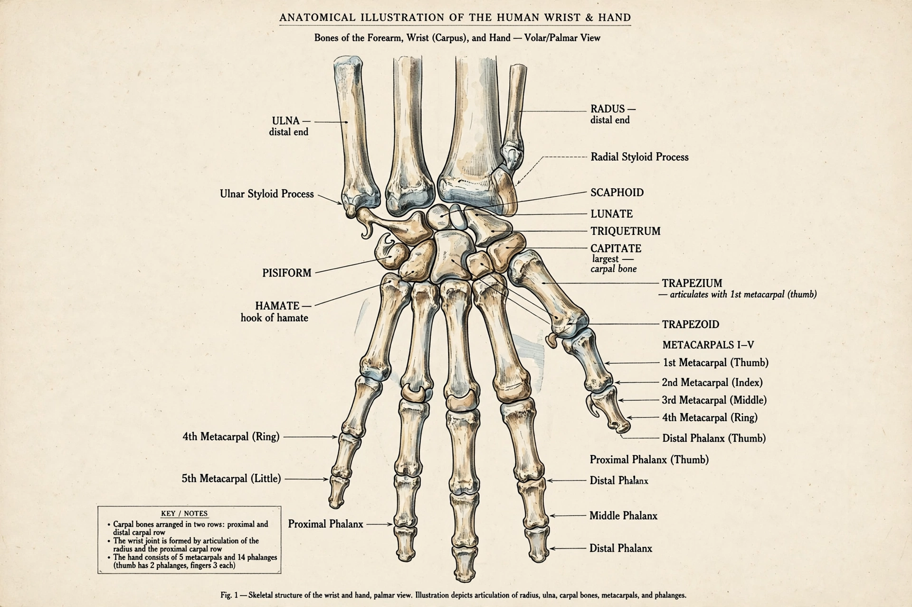

| Wrist | |
|---|---|
 | |
| System | Musculoskeletal |
| Bones | Radius, ulna, 8 carpal bones |
| Joint | Radiocarpal (condyloid) joint |
The wrist is the region between the forearm and the hand, containing eight small carpal bones arranged in two rows. The radiocarpal joint, between the radius and the proximal carpal row, is the principal wrist joint, permitting flexion, extension, abduction (radial deviation), and adduction (ulnar deviation).
The carpal bones are the scaphoid, lunate, triquetrum, and pisiform proximally, and trapezium, trapezoid, capitate, and hamate distally. The carpal tunnel, formed by the flexor retinaculum, transmits the median nerve and flexor tendons. Ligaments bind the carpals in a complex, highly mobile arrangement.
Distal radius (Colles') fracture and scaphoid fracture are common after a fall on an outstretched hand. Carpal tunnel syndrome, from median nerve compression, causes hand pain and numbness. The wrist is also frequently involved in rheumatoid arthritis and gout.